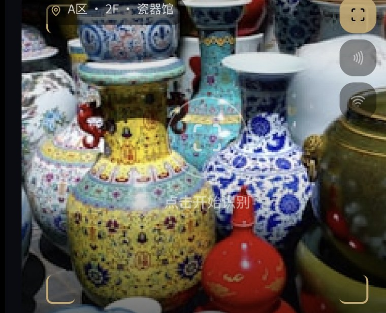
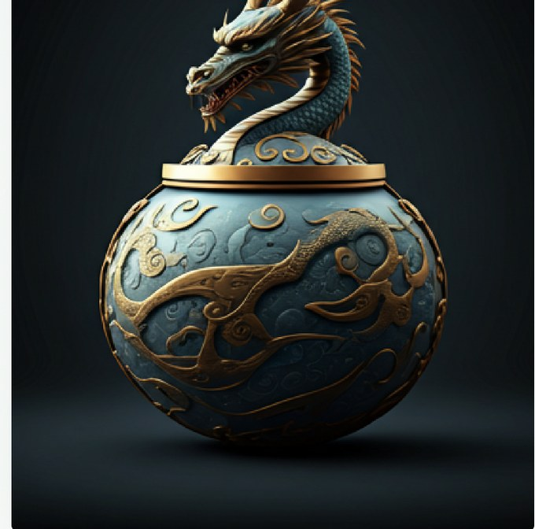

Artificially Intelligent, Culturally Human
告诉策展人你的兴趣，AI 会据此重排展线、挑选讲解深度，并在参观中持续调整。
继续即表示同意 《策展隐私条款》。你的画像仅在本机推理，随时可关闭。

95 号厅 · 中国陶瓷
元代 · 至正十一年（1351）
91a 号厅中国书画当前人流下降 40%，此刻比 33 号厅更从容。要把它提到下一站吗？
4 月 15 日 · 大英博物馆 · 90 分钟
艺术与文化维度显著突出，建议下次优先探索 91a 号厅的中国书画。
你的 AI 画像
语言与内容
隐私与权限
画像推理在本机完成，行为数据默认不上传。每段 AI 讲解都标注来源，你可以随手举报错误。